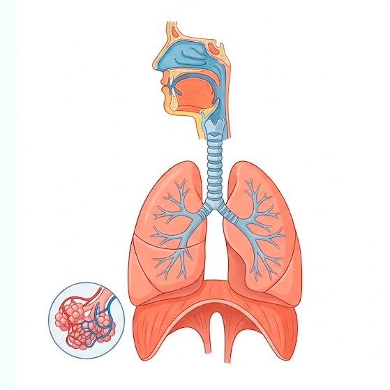

LABORATORI VIRTUAL
Explora l’aparell respiratori
Explora les estructures i observa què passa quan l’oxigen i el diòxid de carboni s’intercanvien als alvèols.
Selecciona una estructura
Les zones s’activen quan hi passes per sobre.

MÒDUL 2 · MICROESCALA
Què passa dins d’un alvèol?
Observa com l’oxigen passa a la sang i el diòxid de carboni fa el camí contrari.